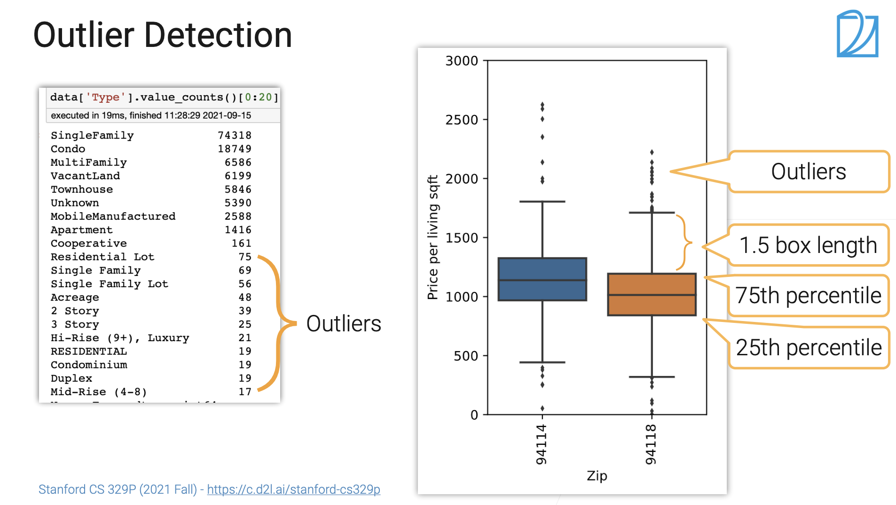
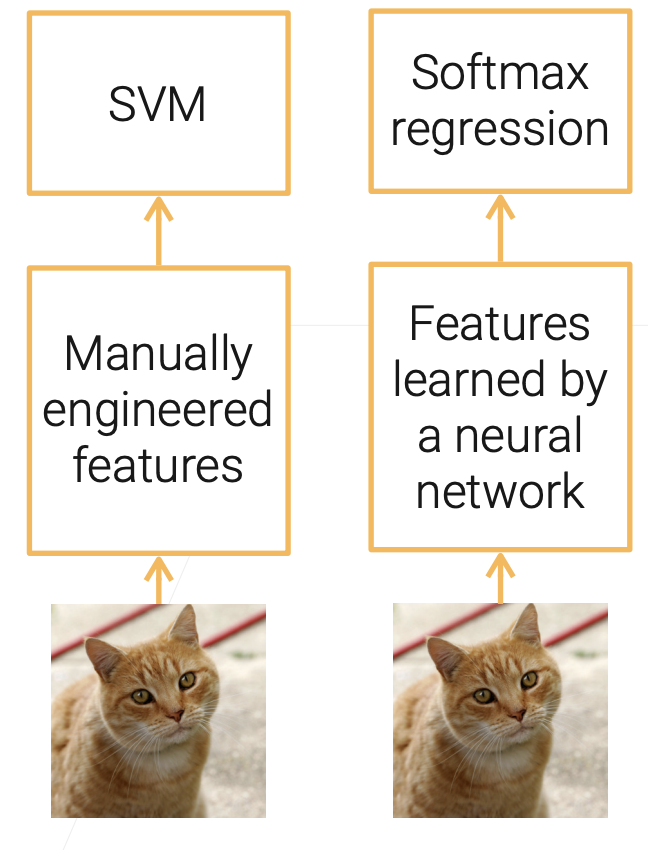

2. 数据处理 —— 《Practical Machine Learning》
该系列内容参考斯坦福 CS329P
课程地址：https://c.d2l.ai/stanford-cs329p/
Bilili：https://www.bilibili.com/video/BV13U4y1N7Uo/
数据清理
数据错误
- 数据经常出现错误，如和真实值不匹配（数据丢失，错误和多余值）
- 好的机器学习模型应该对错误具有鲁棒性，仍然可以收敛，但是精读会下降
数据错误类型：
- 离群值：数据偏离到正常分布之外
- 规则错误：某些列可能是Unique，Not NULL等规则
- 模式错误：数据违反语法和语义格式，拼写错误等约束
离群值检测
类别的离群值，某些类别的数据相比其他类别很少，可能是分类错误，此时可以手动分类；数值类型的离群值可以使用箱形线进行划定正常范围

图1 离群值检测
基于规则的检测
- 函数规则：值得是的值决定一个唯一值
- 拒绝约束：一些复杂的规则，如电话号码位数
基于模式的检测
- 语法模式：拼写错误，大小写错误
- 语义规则：值和列的含义不同，如表示国家的列填写城市的名字
数据清理工具
一些工具可以帮助我们进行数据清理，这些工具包含图形化界面，对异常数据进行自动检测和修正，如：Trifacta Wrangler
数据预处理
机器学习算法对定义的好的固定长度，分布良好的数据表现的很好，因此对于清理后的数据进行一定的数据预处理是必要的
数据归一化
- Min-Max 把数据放缩到之间
- Z-Score 把数据放缩到均值为0，方差为1
- 数据量级缩放
- log缩放
图像预处理
- 图像一般数据量比较大，可以使用剪裁，下采样，压缩等方式对图像进行预处理，这样做的优点：
- 节省存储内存，训练时更好加载图像
- 机器学习对低分辨率的图像表现良好
- 注意有损压缩会导致准确率降低，jpeg图像在ImageNet上会导致1%的准确率降低
- 图像白化处理：一副图像的最终成像会受环境照明亮度，物体反射，相机等多方面因素影响，为了能够捕捉到图像中不变的元素，可以对图像进行白化处理
- 模型收敛速度更快尤其是GAN
视频预处理
- 视频平均时长： movie（～2h），YouTube（～11min），Tiktok（～15sec）
- 预处理应该平衡存储，质量和加载速度等方面的需求
- 机器学习经常使用较短的视频切片（< 10sec），每个视频切片通常包含一个事件
- 为了节省内存也可以直接存编码后的视频，在读取时对视频进行解码然后采样
文本预处理
词干提取（stemming），词形还原（lemmatization），词元化（tokenization）
特征工程
在深度学习之前，特征工程对于机器学习任务很重要，如传统的CV是进行边缘检测和特征点检测，手动进行特征工程，深度学习通过训练深度卷积神经网络自动提取图片特征，实现了端到端的检测，但是对于数据数量和质量要求更加苛刻

图2 传统机器学习方法和深度学习中的特征工程
表格特征工程
表格数据是一些包含数值，类别，文本等类型的数据表，对于表格的特征工程主要包括
- 整型/浮点型：直接使用或者等间隔划分为个唯一值
- 类别数据：one-hot编码
- 时间：转化成时间戳或者天，时，分等统一单位
- 特征组合：不同类别的数据之间做内积，形成多种组合特征
文本特征工程
- 用词元特征代替文本，
- 如Bag of words（BoW）模型，这种方式的效果受限于字典的设计，并且会损失文本的上下文信息
- Word Embedding（e.g. Word2vec）:向量化文本，并且相似的文本被放置在相近的位置。这种方法可以通过预测文本的上下文信息来训练模型
- 预训练语言模型（如BERT， GPT-3）
- 使用Transformer 及其变种模型
- 使用海量的无标注数据
- 使用方法：文本嵌入，下游任务微调
图像/视频特征工程
传统方法通过手工设计的特征如SIFT提取图片中的特征，现在通常用预训练深度神经网络用作特征提取器
- ResNet: 使用ImageNet训练
- I3D: 使用Kinetics数据集训练（动作分类）
- 目前有很多现成的预训练模型可用，一般作者都会放出来自己的模型训练结果供下载，pytorch和tensorflow官方库也会提供一些预训练好的权重
本博客所有文章除特别声明外，均采用 CC BY-NC-SA 4.0 许可协议。转载请注明来自 数据工程师养成博客！
相关推荐


评论
ValineDisqus